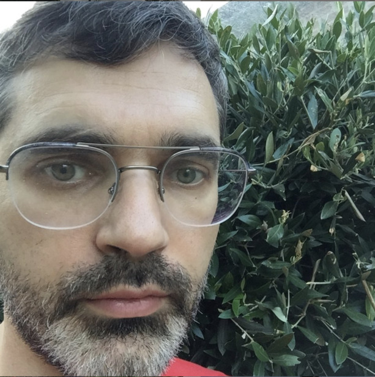

Keynote
Alexander Serebrenik, Eindhoven University of Technology, Netherlands

Abstract In 2003 Dave et al. have coined the term “opinion mining” to refer to “processing a set of search results for a given item, generating a list of product attributes (quality, features, etc.) and aggregating opinions about each of them (poor, mixed, good)”. Nine years later, in 2012 Brooks and Swigger have applied sentiment analysis in the context of software engineering. Today another nine years have passed and it is time to look back: what have we achieved as a research community and where should we go next?
To answer this question we conducted a systematic literature review involving 185 papers. Based on the literature review we present 1) well-defined categories of opinion mining-related software development activities, 2) available opinion mining approaches, whether they are evaluated when adopted in other studies, and how their performance is compared, 3) available datasets for performance evaluation and tool customization, and 4) concerns or limitations SE researchers might need to take into account when applying/customizing these opinion mining techniques. The results of our study serve as references to choose suitable opinion mining tools for SE tasks, and provide critical insights for the further development of opinion mining techniques in the SE domain.
This work has been done together with Bin Lin, Gabriele Bavota and Michele Lanza from Università della Svizzera italiana, Switzerland, Nathan Cassee from Eindhoven University of Technology, The Netherlands and Nicole Novielli from University of Bari, Italy.
Bio Alexander Serebrenik is a Full Professor of Social Software Engineering at the Software Engineering and Technology cluster of Eindhoven University of Technology (TU/e). Alexander’s research goal is to facilitate the evolution of software by taking into account social aspects of software development. His work tends to involve theories and methods both from within computer science (e.g., theory of socio-technical coordination; methods from natural language processing, machine learning) and from outside of computer science (e.g., organizational psychology). The underlying idea of his work is that of empiricism, i.e., that addressing software engineering challenges should be grounded in observation and experimentation, and requires a combination of the social and the technical perspectives. Alexander has co-authored a book, Evolving Software Systems (Springer Verlag, 2014), and more than 100 scientific papers and articles. He is actively involved in organization of scientific conferences as member and chair of steering committees, general chair, program committee chair, track chair, and program committee member. He has won multiple best paper and distinguished reviewer awards, and is member of the editorial board of several journals. Alexander is a senior member of IEEE and a member of ACM.
Social Media
Tweets by SEmotion